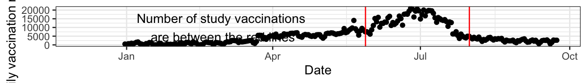

![]()

On Sept 16 2021, 12 researchers from the Ottawa Heart Institute published a pre-print claiming that the COVID 19 mRNA vaccination myocarditis rate was 1 / 1000.
On Sept 24 2021, the authors reported the paper had been withdrawn due to numerical errors, although how the errors occurred was not explained. The biggest error was in the denominator of the the number of vaccinated individuals at risk for myocarditis. The authors said the data were publicly available for download at: https://open.ottawa.ca and they claimed that 32,379 doses were administered during their two month study period. The source population was apparently all vaccinated individuals in the greater Ottawa area. However, if the data is downloaded (it is a simple csv file), it can be seen that approximately 820,000, not 32,000, were given in the study period as shown in the following figure.
Now, anyone can make an error but there are several simple ways to minimize your chances of making one.
1. Plot the data. The above plot quickly shows that a figure of 32,000 is simply not possible.
2. Use your common sense. Most regional people know that the greater Ottawa population is approximately 1,000,000. Most local people also know that vaccination roll out began seriously sometime around March and that 75% of the population is now vaccinated. In other words, about 750,000 people have been vaccinated over the last 8 months. Consequently for the two month study period, any semi literate individual would have expected something around a few hundred thousand and not 32,000 vaccinations which is ridiculously low and implausible. Yet 12 professionals from the Ottawa Heart Institute were not able to detect this error! Speaking of 12, why would it take 12 individuals from the same institution to collect a case series of 32 individuals.
3. Respect the responsibility and accountability that comes with authorship. Do these 12 authors all truly meet authorship criteria? Do they know what authorship criteria are? The dilution of authorship responsibility undoubtedly dilutes accountability. In the limit, as the number of authors increases individual accountability can be expected to trend towards zero.
4. Be conscientious and sweat the small stuff. This implies someone proof reading the manuscript and realizing that i) in addition to an erroneous denominator ii) it also had no page numbers iii) used data as a singular noun iv) described the case series as a cohort study.
5. Make necessary corrections. Interestingly, when the errors were discovered the authors made no attempt to correct their paper, preferring instead to withdraw it.
6. Avoid exaggeration and sensationalism. The authors appear to have attempted to maximize their cases by including non myocarditis cases and potentially false positive cases. For example, the authors elected to include i) two cases without myocarditis but with a diagnosis of pericarditis in isolation ii) at least some cases had no signs of inflammation or myocardial damage (the range of CRP and troponins included normal values) iii) some cases attributed to the vaccine occurred up to 26 days after exposure. Thus the number of potential vaccine induced cases of myocarditis is likely less than reported, perhaps more in the vicinity of 26-28.
7. Make appropriate contrasts. The authors have attributed all cases of myocarditis in these vaccinated individuals to the vaccine. In doing so, they failed to consider the background risk of myocarditis, independently of any relationship to the vaccine. Instead they attributed every case to the vaccine. It should be noted that the annual baseline incidence rate of myocarditis, before Covid and the vaccine, was estimated at 10 - 20 cases /100000. So for the 800,000 vaccinated individuals one may expect between 80-160 cases over a year or between 13 and 27 cases over the 2 month study period even if there was no vaccination myocarditis association. In other words, their data is compatible both with a doubling of the myocarditis risk (about 13 extra cases / 100,000 vaccinations or 99.99% probability of not getting myocarditis) but also compatible with a possible scenario of no excess risk at all.
I personally think these errors and omissions are too numerous and egregious to be easily forgiven. At least 3 of the authors are full professors of medicine and one wonders what example they have set for their more junior colleagues.
There is also a strong history that withdrawn articles unfortunately continue to live on after their retraction. It seems likely that the anti-vaxer movement will quote this false rate of 1 /1,000 cases of vaccine induced myocarditis, rather than the unbiased risk of between 0 and 13 extra myocarditis cases / 100,000 vaccinated people.
While this may provide a teachable moment, it nevertheless remains a publication legacy that researchers should strive to avoid.
Citation
BibTeX citation:
@online{brophy2021,
author = {Brophy, Jay},
title = {Covid Vaccine Myocarditis},
date = {2021-09-29},
url = {https://brophyj.github.io/posts/2021-09-29-my-blog-post/},
langid = {en}
}
For attribution, please cite this work as:
Brophy, Jay. 2021. “Covid Vaccine Myocarditis.” September
29, 2021. https://brophyj.github.io/posts/2021-09-29-my-blog-post/.